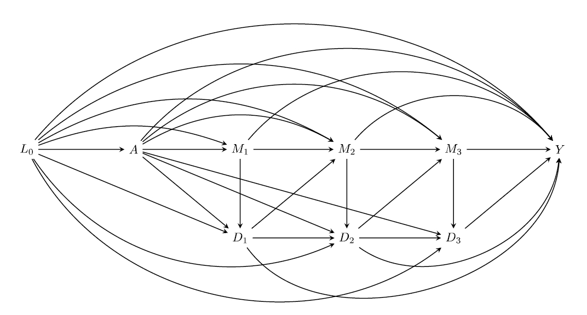
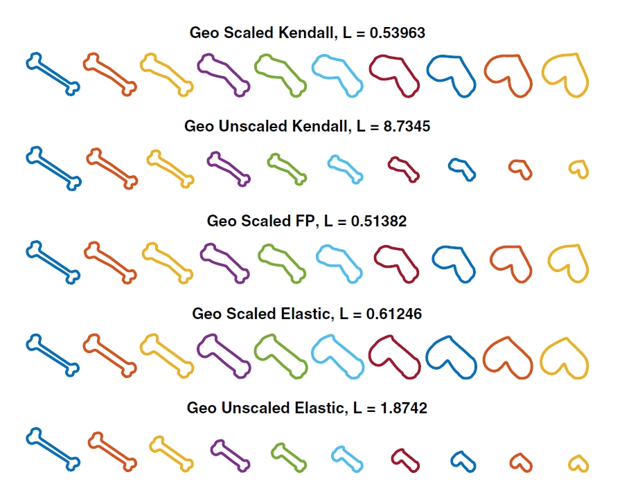
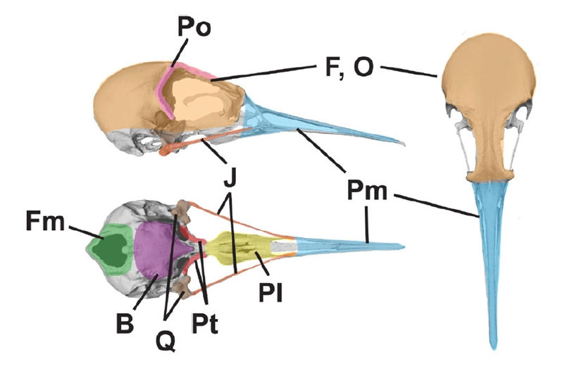

My practicum project in the Valeri Lab focuses on extending the CMAverse
R package. I have developed and implemented a user‑friendly command, cmest_pathcomprisk, which automates causal
mediation analysis when (i) mediators are measured repeatedly over time and (ii)
both mediators and outcomes are subject to competing events such as death.
Diseases of aging—e.g. dementia—often face the competing risk of mortality. Ignoring this alters estimates of indirect effects. Our command provides path‑specific effect estimates that remain causally interpretable under standard identifiability assumptions. I have validated this function through extensive simulations and applied it to study aging‑related health outcomes.

Under Prof. Todd Ogden, I apply functional data analysis tools (MHD, fdasrvf)
to 3‑D mitochondrial shape trajectories in running vs. sedentary mice. We quantify shape
variability along geodesic paths and relate morphological features to metabolic phenotypes.
The figure illustrates geodesic deformation between hypothetical shapes (adapted from
Zhang et al., "Nonparametric k‑sample test on shape spaces with applications to mitochondrial shape analysis", 2022).

I worked with Rossy Natale, Prof. Graham Slater, and Prof. John Bates to examine the semi‑independent evolution of bird beaks and braincases using high-density 3-D landmarks from shorebirds (order Charadriiformes). We compared 11 alternative “modularity” models. We found that the beak has followed its own semi-independent evolutionary path while remaining moderately correlated with the rest of the skull. This research project has been presented at the 2022 American Ornithological Society Annual Conference in Puerto Rico.